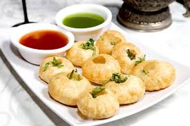

ABOUT INDIAN STREET FOOD
PANI PURI
Most of you would be familiar with this very famous 90s Bollywood track. Not only does it aptly depict the actual Indian street food scene, but is also enough to make you grab a plate of bhel puri right away. When it comes to street food, India tops the charts. Food and beverages that are usually sold on streets by hawkers and vendors in portable stalls and carts is what is termed as street food. Move over aloo chaat and tikkisas India has got lots to offer. Be it north, south, east or west, every region of India has its own speciality. Made with a melange of exotic spices and ingredients, Indian street food is one of its kind. Apart from Indians, a lot of foreign travellers swear by Indian street food as well. If you happen to be a die-hard street food lover who just cannot resist the urge of digging into roadside delights, then this article is going to tantalise your taste buds in just no time.

Most Popular Street Food
Pani Puri
Crisp fried dough balls stuffed with potatoes and tangy or sweet water
Pav Bhaji
Soft butter tasted buns with mashed vegetables cooked in butter & spices
Momo
Steamed dumpling with different fillings
Samosa
Fried pastry with a savory filling like spiced potatoes , onions, peas etc.

While street food in India is fantastic, and I encourage everyone to try it, I still urge you to be cautious when eating outside. No matter how careful you are, there is always a likelihood of getting sick, and that’s the last thing you want during your travels. Here are some ways of preventing the dreaded ‘Delhi Belly’ :
Look for street food stalls where lots of locals are eating, especially families with children. There’s no better way of telling what’s good than the local seal of approval and if there are children around, then you can assume that this street food vendor is trusted and probably very hygienic. Adult’s don’t want to risk their little ones getting sick.
Look for freshly cooked food. If you see a stall that has lots of pre-cooked food sitting out in the open, then maybe give it a miss. Vendors cooking things up fresh or ‘made to order’ are always a safer bet.
Avoid fruit and uncooked vegetables whenever possible. Often, street vendors selling fruit and smoothies will spray their goods with untreated water to keep them looking fresh and luscious. Eating this is a sure-fire way of getting a tummy bug.